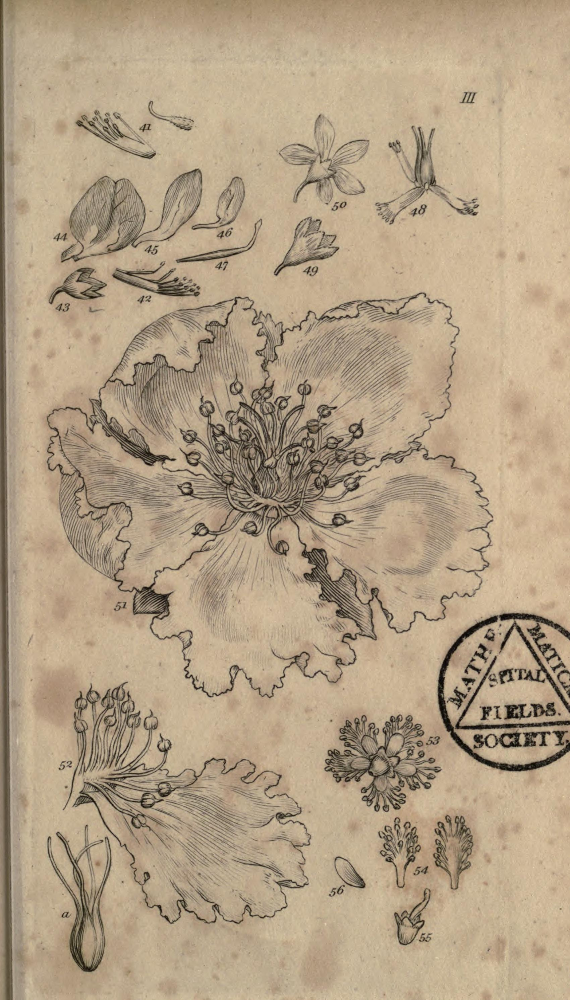

Biology
CCVX entrance exam · Thursday 3 December 2026 · Utrecht, 13:30–16:30 · register by Thursday 19 November 2026
BINAS is allowed in the biology exam.
41 subdomains of notes
774 practice questions with solutions
2 full three-hour mock exams
6 past-exam walkthroughs

Free sample: B1 – Protein Synthesis
This complete subdomain is free, no account needed: its full notes and all its practice questions with worked solutions. It is exactly what the course looks like.

Loading the sample…
The syllabus map
Every domain and subdomain of the CCVX Biology syllabus. The free sample subdomain is marked.
0 · Basic knowledge
A · Skills
- A1 – Using Information Skills
- A2 – Communication
- A3 – Reflecting on Learning
- A4 – Studies and Professions
- A5 – Research
- A6 – Design
- A7 – Modelling
- A8 – Scientific Instruments
- A9 – Evaluation and Judgment
- A10 – Perception
- A11 – Thinking in terms of Form and Function
- A12 – Ecological Thinking
- A13 – Evolutionary Thinking
- A14 – Systems Thinking
- A15 – Developing and Applying Knowledge
- A16 – Contexts
B · Self regulation
C · Self organization
D · Interaction
E · Reproduction
F · Evolution
Official resources
- Past and sample exams: Biology, every official free exam, with the tip to time yourself for 180 minutes
- CCVX: dates, registration and sample exams (www.ccvx.nl)
- The CCVX's own preparation advice